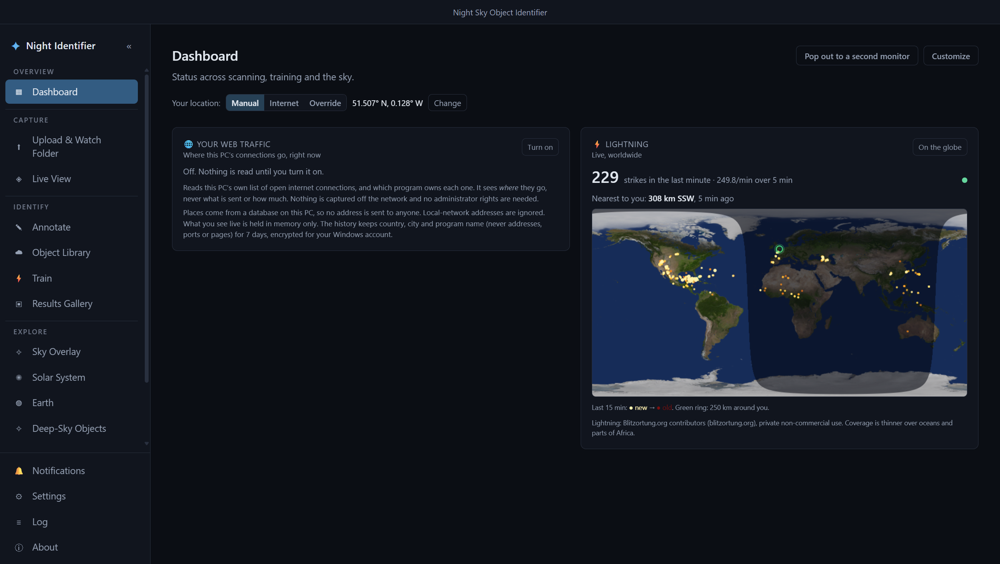
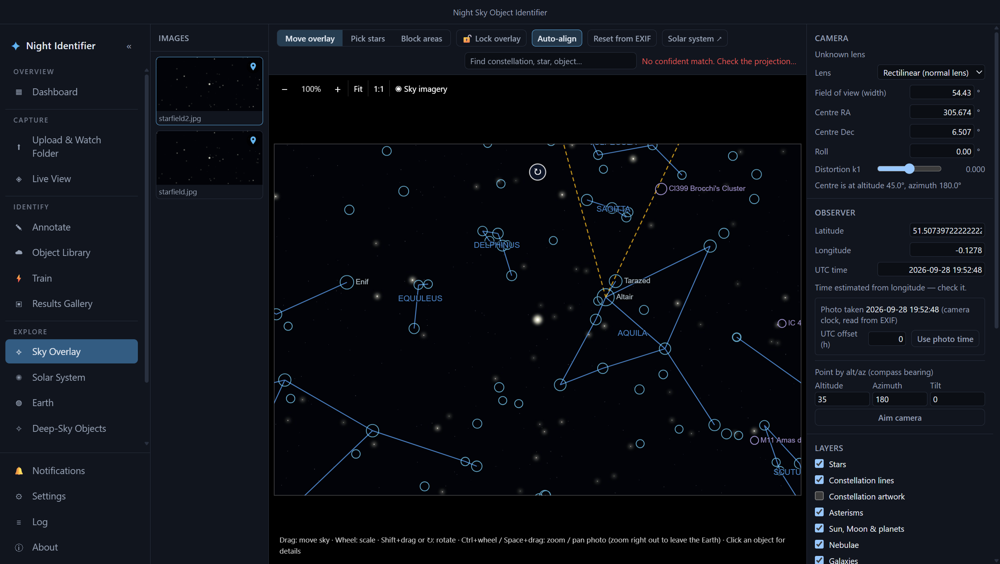
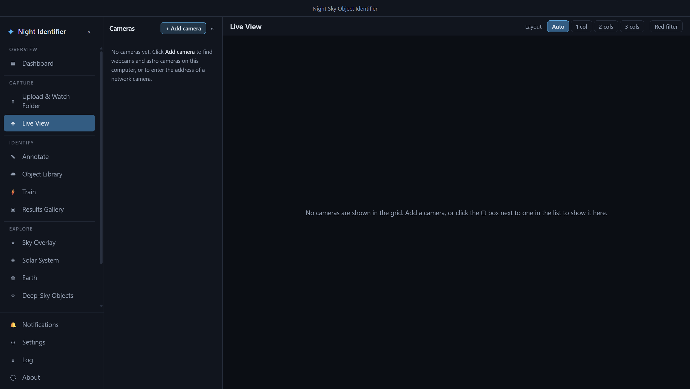
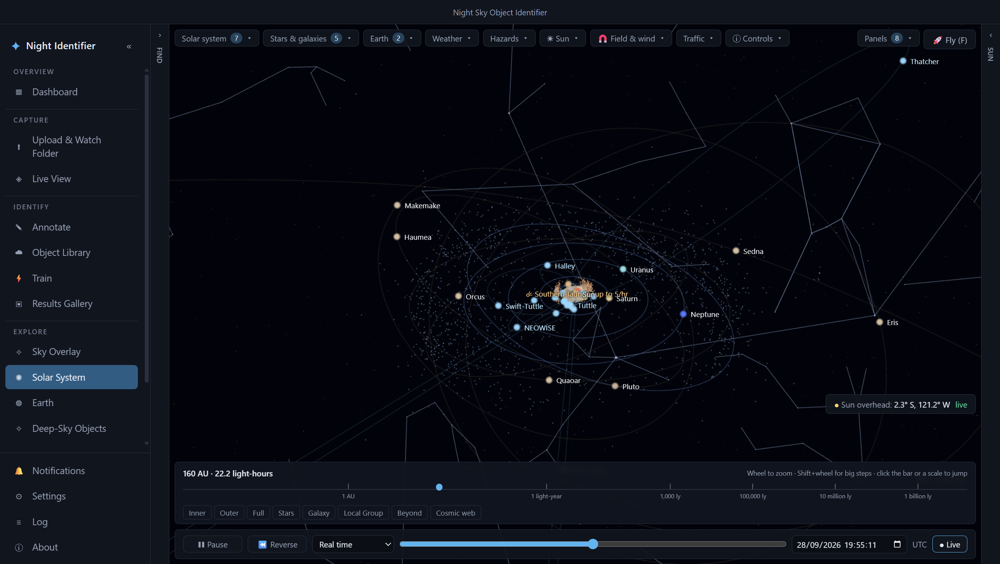
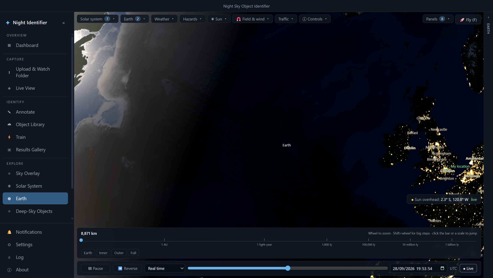
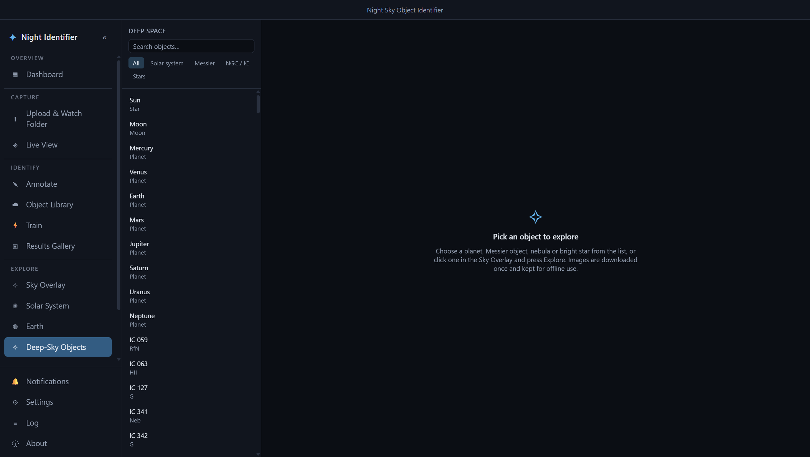
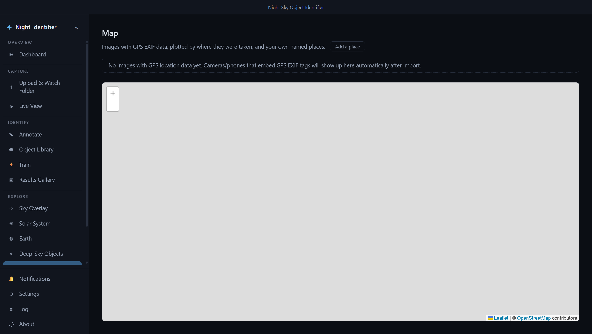

Point a camera at the sky.
Know exactly what you're looking at.
Night Identifier overlays real stars, constellations and deep-sky objects on your astrophotos, tracks a live camera feed, and renders a real-time 3D solar system — all running locally, with your own trainable object detector underneath.

Sky Overlay
Drop in a photo and the app plate-solves it against a real star catalogue, then draws constellations, asterisms, deep-sky objects and planets directly over your frame.
- Auto-align from EXIF (GPS, time, focal length) or pick reference stars by hand
- Rectilinear and fisheye lens models, with distortion correction
- Click any star or object in the overlay for its catalogue details
- Constellation lines, artwork, asterisms, nebulae and galaxies as toggleable layers

Live View
A multi-camera grid for whatever's plugged in or on the network — USB webcams, IP cameras, ASCII/ASCOM astro gear, ZWO cameras and Canon EDSDK bodies.
- Auto, 1/2/3-column layouts, plus a red filter for preserving night vision
- Focus assist, exposure and capture controls per camera
- Built-in motion and meteor detection on the live feed
- One click sends a frame straight into the training pipeline

Solar System, in real time
A full 3D flythrough of the solar system built on real orbital mechanics — planets, moons, comets, dwarf planets and the Kuiper belt, all where they actually are right now.
- Scrub from "inner planets" out to the cosmic web in one continuous zoom
- Live comet and asteroid positions, with named approach highlights
- Fly mode for a free-roam camera through the whole scene
- Play, pause, reverse or jump the clock to any date

Earth, lit by the real Sun
The same 3D engine, pointed at home: live cloud cover, real day/night shading, city lights, and a stack of overlays layered on top.
- Satellites, aircraft, ships and your own web traffic, all plotted live
- Aurora, lightning, earthquakes and volcanic activity as hazard layers
- Live Sun imagery, solar wind and magnetic field lines
- Sharp streamed imagery down to street level when you zoom in

Deep-Sky Objects
A browsable catalogue of everything worth pointing a telescope at — planets, the Messier and NGC/IC catalogues, and bright stars — with imagery cached for offline use.
- Search by name or catalogue number
- Jump here straight from an object picked in Sky Overlay
- Images are downloaded once and kept locally afterwards

Map
Every photo with GPS EXIF plots itself on a map automatically, alongside places you've saved by hand — a quick way to see where a session actually happened.
- Geotagged imports show up with zero setup
- Add and name your own observing spots
- Shared location model with the rest of the app (calendar, dashboard, overlays)

There's more underneath
The rest of the sidebar, in brief.
Sky Calendar
Nights, moon phases, meteor showers, eclipses, occultations and satellite passes, computed from real astronomy for your location.
Space weather & aurora
NOAA aurora oval, Kp index, solar wind, CMEs and flares, plus IGRF-14 magnetic field lines around the planet.
Hazards
Live earthquakes, volcanic activity and wildfire heat spots from USGS, GVP and FIRMS, with optional notifications.
Traffic
Aircraft and ships tracked live over the 3D Earth, plus a private view of your own PC's outbound network connections.
Object detector training
Annotate photos by hand, queue GPU training runs, and browse results — Upload & Watch Folder, Annotate, Train, Object Library and Results Gallery all feed the same model.
Notifications & dashboard
A fully customizable dashboard of drag-and-resize widgets, with alerts for the events you actually care about.